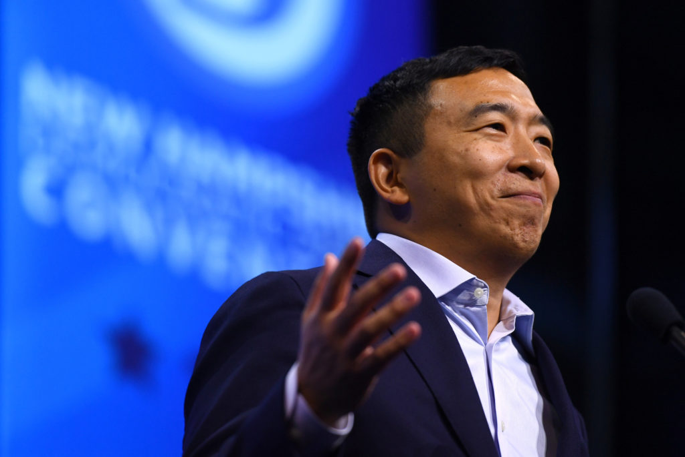

China und die Welt
Seit dem ersten Eintrag hier, ist schon wieder Einiges passiert.
Die Vorgänge in Hongkong sind vermehrt in den Fokus der Massenmedien gerückt - zum Glück. Auch wenn ich nicht mit allen Darstellungen ganz zufrieden bin - die Zeit z.B. schien mir zu neutral [1a] [1b].
Ich bin kein Freund von Gewalt, aber komplett zu verschweigen, warum die Demonstranten sich so vehement wehren und dass selbst einfache Studenten, die sich aus Angst nicht der Polizei stellen wollten [2], unter der Situation litten, halte ich für falsch und nicht objektiv!
Aus Angst vor wirtschaftlichen Konsequenzen und der Abhängigkeit von China, die Europa über Jahrzehnte hat entstehen lassen [3a] - Einer der Preise für günstige (und z.T. sehr schädliche [3b]) Massenwaren - wird China mit Samthandschuhen angefasst.
Allerdings lässt sich nicht jedes Land so reinreden. Schweden z.B. ließ es sich trotz Mahnungen Chinas nicht nehmen den inhaftierten Autor Gui Minhai mit dem Tucholsky-Preis auszuzeichnen [4]. Gui Minhai wird vermutlich seit Jahren vom chinesischen Staat an einem unbekannten Ort festgehalten - Man will sich nicht ausmalen unter welchen Bedingungen.
Klimawandel
Inzwischen sollte nahezu jeder eingesehen haben, dass wir dringend handeln sollten um den Klimawandel so gut es geht einzudämmen. Wie stark und ob der Mensch dafür verantwortlich ist - Wenn du mich fragst sehr und eindeutig JA - ist gar nicht mal so wichtig. Alles was wir heute versäumen, wird sich rächen. Ressourcen werden in den nächsten Jahrzehnten knapp, der Meeresspiegel wird steigen, Menschen werden flüchten. Es ist sicher nicht auszuschließen ist, dass es auch Krieg geben wird.
Genau deshalb freute es mich heute zu lesen, dass in den USA ein Klimabündnis namens “World War Zero” gegründet wurde. Politiker, Celebrities und Militärs - Personen des öffentlichen Lebens - um den Ex-Außenminister John Kerry [5] wollen die große Masse der Amerikaner überzeugen, dass gehandelt werden muss. Ich hoffe inständig, dass sie Erfolg haben - denn auch unsere Gesellschaft orientiert sich stark an den USA, vor allem an Hollywood.
Falls du deine Stimmung weiter aufhellen willst: Hier ein Bild von einem Hund, der verletzte Koalas im australischen Busch sucht.
Und falls du dich gegen den Klimawandel stark machen willst, besuche doch beim nächsten internationalen Termin den Klimageneralstreik in deiner Stadt. Auch deinen Konsum zu überdenken lohnt sich. Flugreisen sind übrigens der Punkt an dem du am meisten Emissionen einsparen kannst.
USA im Wandel?
Das Umdenken dort hat jedenfalls begonnen. Präsidentschaftskandidaten wie Bernie Sanders [6] und Andrew Yang [7] geben Hoffnung.
Bernie Sanders - Photo by Frederic J. Brown © AFP [B4]Sanders, 78 Jahre alt, ist schon seit vielen Jahrzehnten politisch aktiv. Bereits 1963 demonstrierte er gegen die Segregation [8] - der Trennung von dunkel- und hellhäutigen Menschen. Zur damaligen Zeit gab es u.a. getrennte Schwimmbäder oder gesperrte Bereiche im Bus - Schwarze wurden diskriminiert, Weiße bevorzugt.
Bernie Sanders being arrested while protesting against segregation in 1963 - creator unknown [B5]
Rassismus war - wie heute - ein großes Problem, das auch noch vom Staat gefördert wurde. - Biden setzte sich zu dieser Zeit angeblich für die Segregation ein. Bei Interesse recherchiert bitte selbst.
Schon 1986 trat Sanders für die Rechte von homosexuellen ein [9] - was damals ein großes Risiko bedeutete.
Seine Agenda scheint sich bis heute kaum geändert zu haben. Er strebt nach sozialer Gerechtigkeit, Umverteilung des Geldes und harmonischem Zusammenleben. Auch die Legalisierung von Marihuana befürwortet er.
Andrew Yang, 44 Jahre, will die soziale Ungerechtigkeit auf unkonventionelle Art bekämpfen. Für ihn löst ein bedingungsloses Grundeinkommen viele Probleme - Arbeitsplätze die durch die Digitalisierung wegfallen, werden so zum Segen anstatt zum Fluch.
 Andrew Yang (2019) Photo by Ertl Gretchen © Reuters [B7]Ich finde auch seinen Ansatz gut und freue mich, dass beide genannten Kandidaten miteinander reden und sympathisieren.
Hier findet ihr außerdem eine vor kurzem veröffentlichte Studie zu Yangs Idee der "Trickle Up" Economics [Link zu Reddit].
Information als Ressource
Dass Informationen in der heutigen Welt viel wert sind, scheint den meisten bewusst. Googles Geschäftsprinzip basiert darauf. Auch Facebook und andere Social-Media-Dienste verdienen so ihr Geld.
Trotz des Informations-Überangebotes - oder vielleicht auch deshalb - sind verifizierte Informationen rar. Auch ich stelle immer mal wieder fest, dass ich auf Fake-News reingefallen bin, wenn ich z.B. für diesen Blog nach Quellen recherchiere (Daher auch die vielen Quellen - und ja, Reddit ist voreingenommen, aber trotzdem gut geeignet.) Es freute mich daher zu lesen, dass eine Plattform für die bessere Verfügbarkeit von wissenschaftlichen Daten, gebaut werden soll - Open Source, gemeinschaftlich, frei, und kostenlos [10].
Die Wissenschaft, die zur Zeit leider immer mehr unreflektiert und emotional hinterfragt wird - wie z.B. von Flat-Earthern, die nicht mal ihren eigenen Experimenten glauben [11] - kann nur profitieren.
Textbelege:
[1a] https://www.zeit.de/politik/ausland/2019-11/polytechnische-universitaet-hongkong-besetzung-ende
[1b] https://www.zeit.de/politik/ausland/2019-11/hongkong-polytechnische-universitaet-polizeieinsatz-beendet
[2] https://www.reddit.com/r/HongKong/comments/e2i9pa/one_of_the_last_20_or_so_citizens_at_polyu_is/?utm_medium=android_app&utm_source=share
[3a] https://youtu.be/4-32OPBmH84?t=794 (13:14)
[3b] https://youtu.be/4-32OPBmH84?t=664 (11:04)
[4] https://www.dw.com/de/schweden-ehrt-in-china-inhaftierten-verleger-gui-minhai/a-51273469
[5] https://www.zeit.de/gesellschaft/zeitgeschehen/2019-12/world-war-zero-john-kerry-ex-us-aussenminister-klimawandel-initiative
[6] https://www.reddit.com/r/SandersForPresident/top/
[7] https://www.reddit.com/r/YangForPresidentHQ/top/
[8] https://www.reddit.com/r/SandersForPresident/comments/d5fdeg/bernie_sanders_being_arrested_while_protesting/
[9] https://www.reddit.com/r/SandersForPresident/comments/dg91lh/the_only_2020_candidate_who_has_consistently/
[10] https://www.reddit.com/r/Futurology/comments/e56c16/archivists_are_trying_to_make_sure_a_pirate_bay/?utm_medium=android_app&utm_source=share
[11] https://metro.co.uk/2019/02/27/flat-earthers-accidentally-prove-earth-round-netflix-documentary-8772206/
Bildquellen:
[B1] https://www.reddit.com/r/HongKong/comments/e2i9pa/one_of_the_last_20_or_so_citizens_at_polyu_is/?utm_medium=android_app&utm_source=share
[B2] https://www.shz.de/deutschland-welt/politik/Im-Krankenhaus-US-Demokrat-Bernie-Sanders-setzt-Wahlkampf-aus-id25851637.html
[B3] https://www.reddit.com/r/AnimalsBeingBros/comments/e4j2kk/this_good_boy_was_abandoned_but_now_he_saves/?utm_medium=android_app&utm_source=share
[B4] https://www.reddit.com/r/AnimalsBeingBros/comments/e4j2kk/this_good_boy_was_abandoned_but_now_he_saves/
[B5] https://www.reddit.com/r/SandersForPresident/comments/d5fdeg/bernie_sanders_being_arrested_while_protesting/
[B6] https://www.reddit.com/r/SandersForPresident/comments/dg91lh/the_only_2020_candidate_who_has_consistently/
[B7]https://www.pbs.org/newshour/politics/2020-candidate-andrew-yang-announces-plans-to-give-away-1000-a-month-to-10-families
[B8] https://metro.co.uk/2019/02/27/flat-earthers-accidentally-prove-earth-round-netflix-documentary-8772206/
text by v.